CHAPTER 06 / 中英对照
缓存一致性协议
Coherence Protocols
原书第 91 页PDF 113
ENGLISHIn this chapter, we return to the topic of cache coherence that we introduced in Chapter 2. We defined coherence in Chapter 2, in order to understand coherence’s role in supporting consistency, but we did not delve into how specific coherence protocols work or how they are implemented. This chapter discusses coherence protocols in general, before we move on to specific classes of protocols in the next two chapters. We start in Section 6.1 by presenting the big picture of how coherence protocols work, and then show how to specify protocols in Section 6.2. We present one simple, concrete example of a coherence protocol in Section 6.3 and explore the protocol design space in Section 6.4.
中文本章回到第 2 章引入的缓存一致性主题。第 2 章给出了缓存一致性的定义，以便理解它在支持内存一致性方面的作用，但没有深入讨论具体缓存一致性协议的工作方式及其实现。本章先讨论缓存一致性协议的一般原理，后两章再介绍具体的协议类别。6.1 节首先概述缓存一致性协议的工作方式，6.2 节介绍如何描述协议，6.3 节给出一个简单而具体的协议实例，6.4 节探讨协议的设计空间。
ENGLISH6.1 THE BIG PICTURE
中文6.1 总体概览
ENGLISHThe goal of a coherence protocol is to maintain coherence by enforcing the invariants introduced in Section 2.3 and restated here.
中文缓存一致性协议的目标是强制满足 2.3 节介绍的不变量，从而维持缓存一致性。这些不变量重述如下。
ENGLISH1. Single-Writer, Multiple-Read (SWMR) Invariant. For any memory location A, at any given (logical) time, there exists only a single core that may write to A (and can also read it) or some number of cores that may only read A.
中文1. 单写者多读者（SWMR）不变量：对于任意内存位置 A，在任意给定的（逻辑）时刻，要么只有一个核可以写 A（也可以读 A），要么存在若干个只能读 A 的核。
ENGLISH2. Data-Value Invariant. The value of the memory location at the start of an epoch is the same as the value of the memory location at the end of its last read-write epoch.
中文2. 数据值不变量：一个时期开始时某内存位置的值，等于该内存位置上一个读写时期结束时的值。
ENGLISHTo implement these invariants, we associate with each storage structure—each cache and the LLC/memory—a finite state machine called a coherence controller. The collection of these coherence controllers constitutes a distributed system in which the controllers exchange messages with each other to ensure that, for each block, the SWMR and data value invariants are maintained at all times. The interactions between these finite state machines are specified by the coherence protocol.
中文为实现这些不变量，我们为每个存储结构——每个缓存以及 LLC/内存——关联一个称为缓存一致性控制器的有限状态机。这些控制器共同构成一个分布式系统，彼此交换消息，以确保每个块始终满足 SWMR 不变量和数据值不变量。缓存一致性协议规定了这些有限状态机之间的交互。
ENGLISHCoherence controllers have several responsibilities. The coherence controller at a cache, which we refer to as a cache controller, is illustrated in Figure 6.1. The cache controller must service requests from two sources. On the “core side,” the cache controller interfaces to the processor core. The controller accepts loads and stores from the core and returns load values to the core. A cache miss causes the controller to initiate a coherence transaction by issuing a coherence request (e.g., request for read-only permission) for the block containing the location accessed by the core. This coherence request is sent across the interconnection network to one
中文缓存一致性控制器承担多项职责。缓存处的缓存一致性控制器简称缓存控制器，如图 6.1 所示。缓存控制器必须处理来自两个来源的请求。在“处理器核侧”，缓存控制器连接处理器核，接收核发出的 load 和 store 操作，并将 load 结果返回给核。缓存未命中时，控制器针对核所访问位置所在的块发出缓存一致性请求（例如申请只读权限），从而发起缓存一致性事务。该请求经互连网络发送到一个
查看 原书第 91 页 的完整原版面（PDF 113）
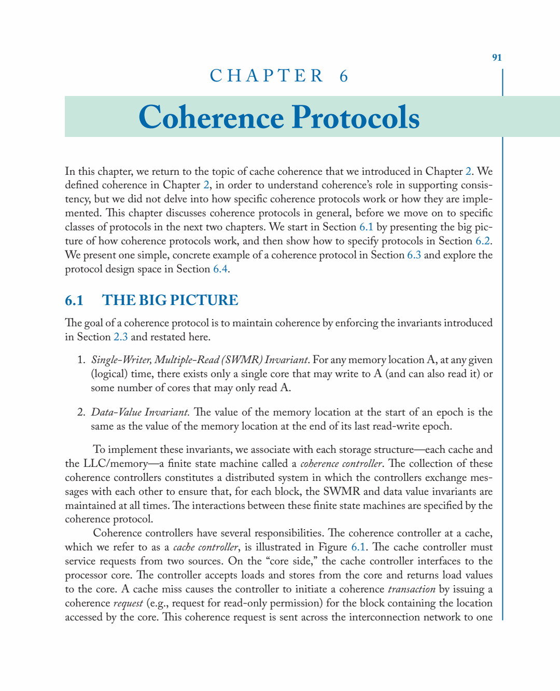
原书第 92 页PDF 114
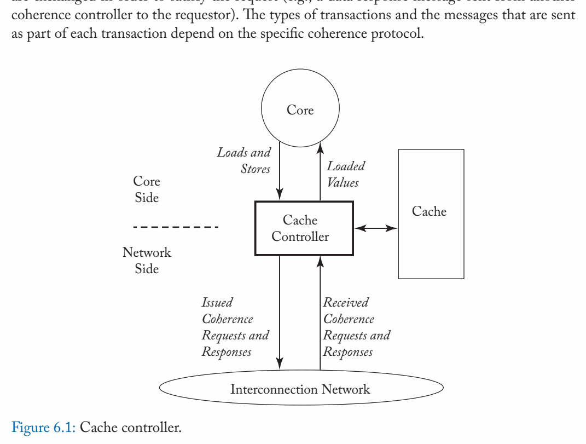
ENGLISHor more coherence controllers. A transaction consists of a request and the other message(s) that are exchanged in order to satisfy the request (e.g., a data response message sent from another coherence controller to the requestor). The types of transactions and the messages that are sent as part of each transaction depend on the specific coherence protocol.
中文或多个缓存一致性控制器。一个事务包括一个请求，以及为满足该请求而交换的其他消息，例如另一个缓存一致性控制器发送给请求方的数据响应消息。事务类型以及每个事务中发送的消息由具体缓存一致性协议决定。
ENGLISHOn the cache controller’s “network side,” the cache controller interfaces to the rest of the system via the interconnection network. The controller receives coherence requests and coherence responses that it must process. As with the core side, the processing of incoming coherence messages depends on the specific coherence protocol.
中文在缓存控制器的“网络侧”，控制器通过互连网络连接系统其余部分，并接收需要处理的缓存一致性请求和响应。与处理器核侧一样，如何处理收到的缓存一致性消息也取决于具体协议。
ENGLISHThe coherence controller at the LLC/memory, which we refer to as a memory controller, is illustrated in Figure 6.2. A memory controller is similar to a cache controller, except that it usually has only a network side. As such, it does not issue coherence requests (on behalf of loads or stores) or receive coherence responses. Other agents, such as I/O devices, may behave like cache controllers, memory controllers, or both depending upon their specific requirements.
中文LLC/内存处的缓存一致性控制器简称内存控制器，如图 6.2 所示。内存控制器与缓存控制器相似，但通常只有网络侧。因此，它不代表 load 或 store 操作发起缓存一致性请求，也不接收缓存一致性响应。I/O 设备等其他代理可根据自身的具体需求，表现为缓存控制器、内存控制器，或兼具两者行为。
ENGLISHEach coherence controller implements a set of finite state machines—logically one independent, but identical finite state machine per block—and receives and processes events (e.g., incoming coherence messages) depending upon the block’s state. For an event of type E (e.g., a store request from the core to the cache controller) to block B, the coherence controller takes
中文每个缓存一致性控制器都实现一组有限状态机——从逻辑上看，每个块对应一个独立但结构相同的有限状态机——并依据块的状态接收和处理事件（例如到达的缓存一致性消息）。当块 B 发生类型为 E 的事件，例如处理器核向缓存控制器提出 store 请求时，缓存一致性控制器采取的
查看 原书第 92 页 的完整原版面（PDF 114）
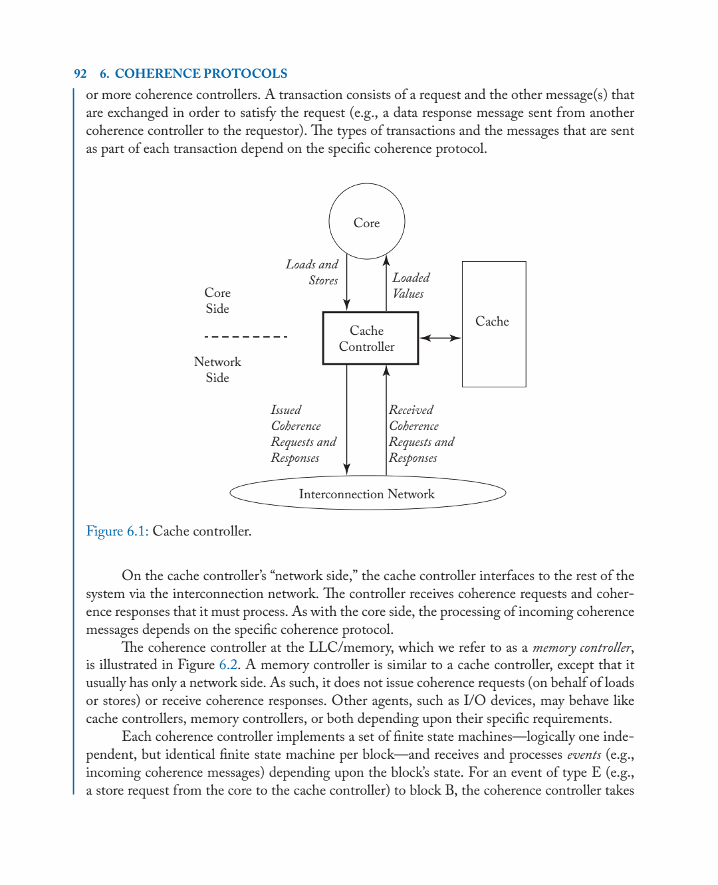
原书第 93 页PDF 115
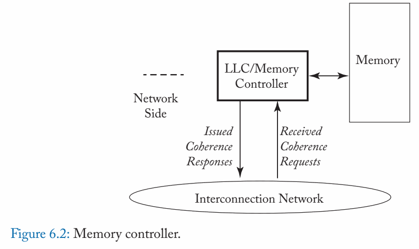
ENGLISHactions (e.g., issues a coherence request for read-write permission) that are a function of E and of B’s state (e.g., read-only). After taking these actions, the controller may change the state of B.
中文动作（例如发出申请读写权限的缓存一致性请求）是 E 和 B 当前状态（例如只读）的函数。执行这些动作之后，控制器可能改变 B 的状态。
ENGLISH6.2 SPECIFYING COHERENCE PROTOCOLS
中文6.2 缓存一致性协议的规约
ENGLISHWe specify a coherence protocol by specifying the coherence controllers. We could specify coherence controllers in any number of ways, but the particular behavior of a coherence controller lends itself to a tabular specification [9]. As shown in Table 6.1, we can specify a controller as a table in which rows correspond to block states and columns correspond to events. We refer to a state/event entry in the table as a transition, and a transition for event E pertaining to block B consists of (a) the actions taken when E occurs and (b) the next state of block B. We express transitions in the format “action/next state” and we may omit the “next state” portion if the next state is the current state. As an example of a transition in Table 6.1, if a store request for block B is received from the core and block B is in a read-only state (RO), then the table shows that the controller’s transition will be to perform the action “issue coherence request for read-write permission (to block B)” and change the state of block B to RW.
中文我们通过描述缓存一致性控制器来规定缓存一致性协议。控制器可以采用多种方式描述，但其行为特征非常适合采用表格化规约 [9]。如表 6.1 所示，可以用一张表描述控制器，其中行对应块状态，列对应事件。表中的每个状态/事件条目称为一次转移；对于涉及块 B 的事件 E，一次转移由两部分组成：（a）E 发生时执行的动作；（b）块 B 的下一状态。我们采用“动作/下一状态”的格式；如果下一状态与当前状态相同，可以省略“下一状态”部分。例如，在表 6.1 中，若控制器收到处理器核对块 B 的 store 请求，而 B 处于只读状态（RO），则控制器执行“发出申请块 B 读写权限的缓存一致性请求”，并将 B 的状态改为 RW。
ENGLISHThe example in Table 6.1 is intentionally incomplete, for simplicity, but it illustrates the capability of a tabular specification methodology to capture the behavior of a coherence controller. To specify a coherence protocol, we simply need to completely specify the tables for the cache controllers and the memory controllers.
中文为简化说明，表 6.1 的示例刻意没有给出完整规约，但它展示了表格化规约方法描述缓存一致性控制器行为的能力。要规定一个缓存一致性协议，只需完整定义缓存控制器和内存控制器的状态转移表。
ENGLISHThe differences between coherence protocols lie in the differences in the controller specifications. These differences include different sets of block states, transactions, events, and transitions. In Section 6.4, we describe the coherence protocol design space by exploring the options for each of these aspects, but we first specify one simple, concrete protocol.
中文缓存一致性协议之间的差异体现在控制器规约之中，包括块状态、事务、事件和转移的不同组合。6.4 节将分别考察这些方面的可选方案，介绍协议设计空间；在此之前，我们先给出一个简单而具体的协议。
查看 原书第 93 页 的完整原版面（PDF 115）
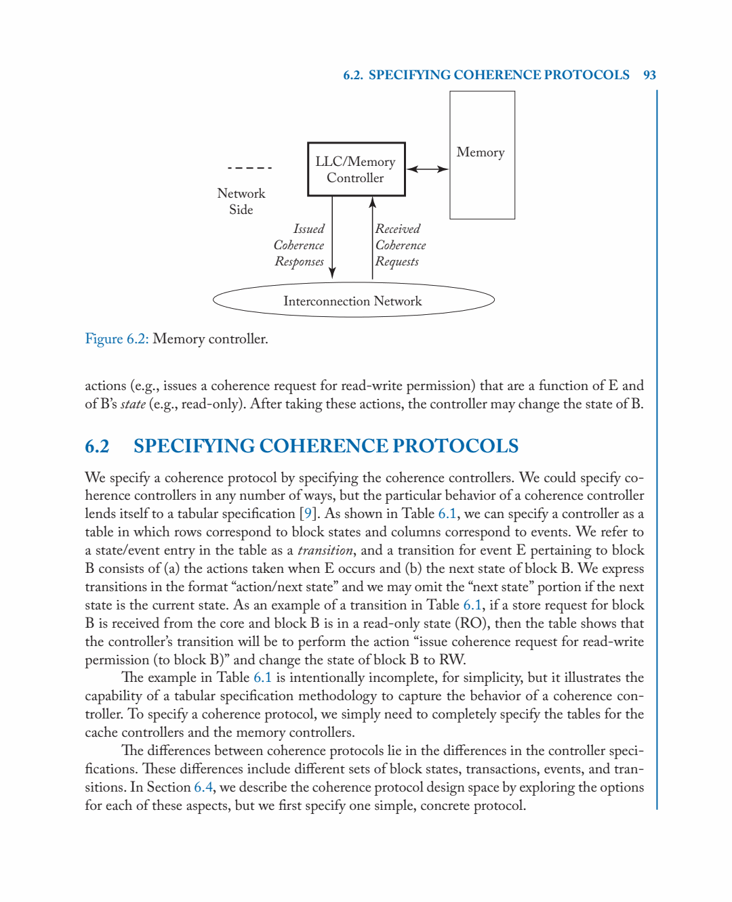
原书第 94 页PDF 116
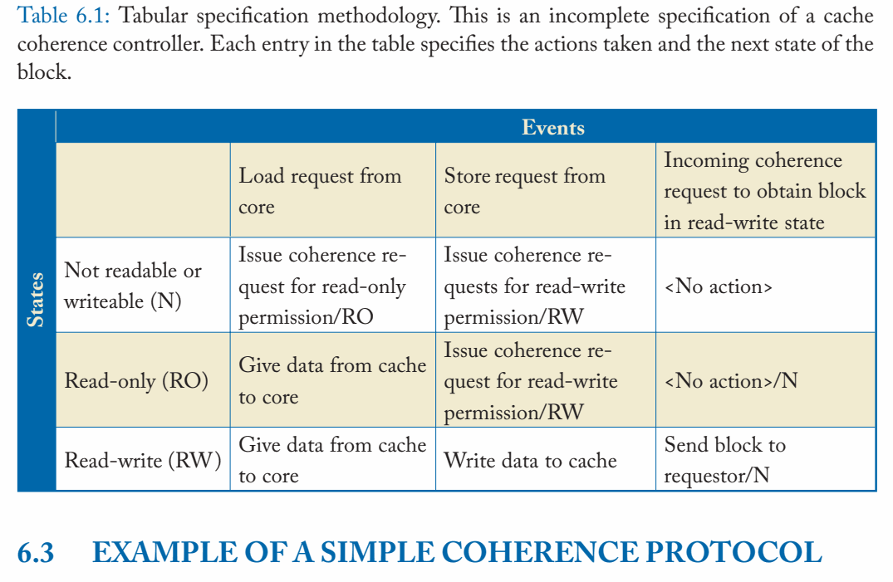
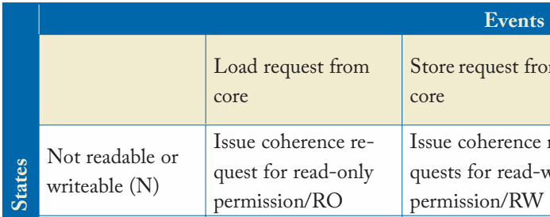
展开可搜索的英文文字
setatS Events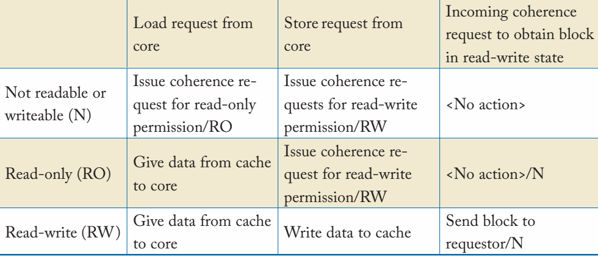
展开可搜索的英文文字
Incoming coherence Load request from Store request from request to obtain block core core in read-write state Issue coherence re- Issue coherence re- Not readable or quest for read-only quests for read-write <No action> writeable (N) permission/RO permission/RW Issue coherence re- Give data from cache Read-only (RO) quest for read-write <No action>/N to core permission/RW Give data from cache Send block to Read-write (RW) Write data to cache to core requestor/NENGLISH6.3 EXAMPLE OF A SIMPLE COHERENCE PROTOCOL
中文6.3 一个简单的缓存一致性协议实例
ENGLISHTo help understand coherence protocols, we now present a simple protocol. Our system model is the baseline system model from Section 2.1, but with the interconnection network restricted to being a shared bus: a shared set of wires on which a core can issue a message and have it observed by all cores and the LLC/memory.
中文为帮助理解缓存一致性协议，下面给出一个简单协议。系统采用 2.1 节的基准模型，但将互连网络限制为共享总线：总线由一组共享导线组成，一个核可在其上发出消息，所有核以及 LLC/内存都能观察到该消息。
ENGLISHEach cache block can be in one of two stable coherence states: I(nvalid) and V(alid). Each block at the LLC/memory can also be in one of two coherence states: I and V. At the LLC/memory, the state I denotes that all caches hold the block in state I, and the state V denotes that one cache holds the block in state V. There is also a single transient state for cache blocks, IVD, discussed below. At system startup, all cache blocks and LLC/memory blocks are in state I. Each core can issue load and store requests to its cache controller; the cache controller will implicitly generate an Evict Block event when it needs to make room for another block. Loads and stores that miss in the cache initiate coherence transactions, as described below, to obtain a valid copy of the cache block. Like all the protocols in this primer, we assume a writeback cache; that is, when a store hits, it writes the store value only to the (local) cache and waits to write the entire block back to the LLC/memory in response to an Evict Block event.
中文每个缓存块可处于两个稳定的缓存一致性状态之一：I（Invalid，无效）或 V（Valid，有效）。LLC/内存中的每个块也可处于 I 或 V 两种状态之一。在 LLC/内存处，I 表示所有缓存中的该块均处于 I；V 表示有一个缓存中的该块处于 V。此外，缓存块还具有一个下文将讨论的瞬态 IVᴰ。系统启动时，所有缓存块以及 LLC/内存块均处于 I。每个核都可向其缓存控制器发出 load 和 store 请求；当缓存控制器需要为另一个块腾出空间时，会隐式生成 Evict Block（驱逐块）事件。缓存未命中的 load 和 store 操作会按下述方式发起缓存一致性事务，以获取缓存块的有效副本。与本书所有协议一样，这里假定缓存采用写回策略：store 命中时，只将 store 值写入本地缓存，直到发生 Evict Block 事件，才将整个块写回 LLC/内存。
ENGLISHThere are two types of coherence transactions implemented using three types of bus messages: Get requests a block, DataResp transfers the block’s data, and Put writes the block back to the memory controller. On a load or store miss, the cache controller initiates a Get transaction by sending a Get message and waiting for the corresponding DataResp message. The Get
中文协议包含两类缓存一致性事务，由三类总线消息实现：Get 请求一个块，DataResp 传输块的数据，Put 将块写回内存控制器。发生 load 或 store 未命中时，缓存控制器发送 Get 消息并等待相应的 DataResp 消息，以此发起 Get 事务。Get
查看 原书第 94 页 的完整原版面（PDF 116）
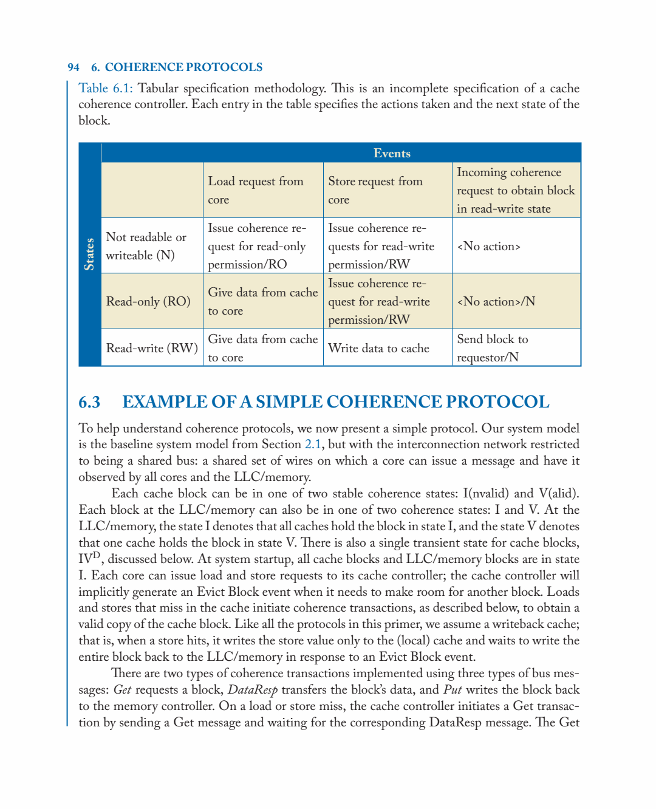
原书第 95 页PDF 117
ENGLISHtransaction is atomic in that no other transaction (either Get or Put) may use the bus between when the cache sends the Get and when the DataResp for that Get appears on the bus. On an Evict Block event, the cache controller sends a Put message, with the entire cache block, to the memory controller.
中文事务具有原子性：从缓存发送 Get 到该 Get 对应的 DataResp 出现在总线之间，其他事务（Get 或 Put）均不得使用总线。发生 Evict Block 事件时，缓存控制器发送携带整个缓存块的 Put 消息给内存控制器。
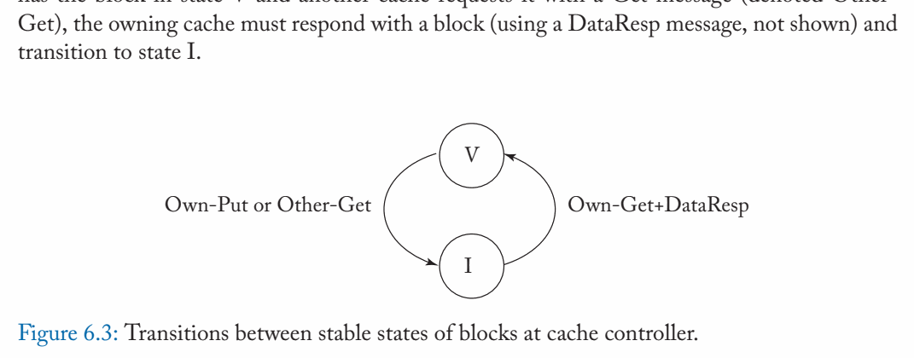
ENGLISHWe illustrate the transitions between the stable coherence states in Figure 6.3. We use the prefaces “Own” and “Other” to distinguish messages for transactions initiated by the given cache controller vs. those initiated by other cache controllers. Note that if the given cache controller has the block in state V and another cache requests it with a Get message (denoted Other- Get), the owning cache must respond with a block (using a DataResp message, not shown) and transition to state I.
中文图 6.3 展示了稳定缓存一致性状态之间的转移。前缀“Own”和“Other”分别表示由本缓存控制器和其他缓存控制器发起的事务消息。注意，如果本缓存控制器中的块处于 V，而另一个缓存通过 Get 消息（记作 Other-Get）请求该块，那么持有所有权的缓存必须用 DataResp 消息（图中未画出）返回该块，并转为 I。
ENGLISHTables 6.2 and 6.3 specify the protocol in more detail. Shaded entries in the table denote impossible transitions. For example, a cache controller should never see its own Put request on the bus for a block that is in state V in its cache (as it should have already transitioned to state I).
中文表 6.2 和表 6.3 给出了更详细的协议规约。表中阴影条目表示不可能发生的转移。例如，缓存控制器不应在总线上看到针对其缓存中 V 状态块的自身 Put 请求，因为此时该块应已转为 I。
ENGLISHThe transient state IVD corresponds to a block in state I that is waiting for data (via a DataResp message) before transitioning to state V. Transient states arise when transitions between stable states are not atomic. In this simple protocol, individual message sends and receives are atomic, but fetching a block from the memory controller requires sending a Get message and receiving a DataResp message, with an indeterminate gap in between. The IVD state indicates that the protocol is waiting for a DataResp. We discuss transient states in more depth in Section 6.4.1.
中文瞬态 IVᴰ 表示块原来处于 I，正在等待通过 DataResp 消息到达的数据，随后将转为 V。当稳定状态之间的转移并非原子操作时，就需要瞬态。在这个简单协议中，单次消息发送和接收是原子的，但从内存控制器获取一个块需要发送 Get 并接收 DataResp，两者之间的间隔不确定。IVᴰ 表示协议正在等待 DataResp。6.4.1 节将更深入地讨论瞬态。
ENGLISHThis coherence protocol is simplistic and inefficient in many ways, but the goal in presenting this protocol is to gain an understanding of how protocols are specified. We use this specification methodology throughout this book when presenting different types of coherence protocols.
中文这个缓存一致性协议在许多方面都较为简陋且低效，但给出它的目的是帮助理解协议如何进行规约。本书介绍不同类型的缓存一致性协议时，都会使用这种规约方法。
查看 原书第 95 页 的完整原版面（PDF 117）
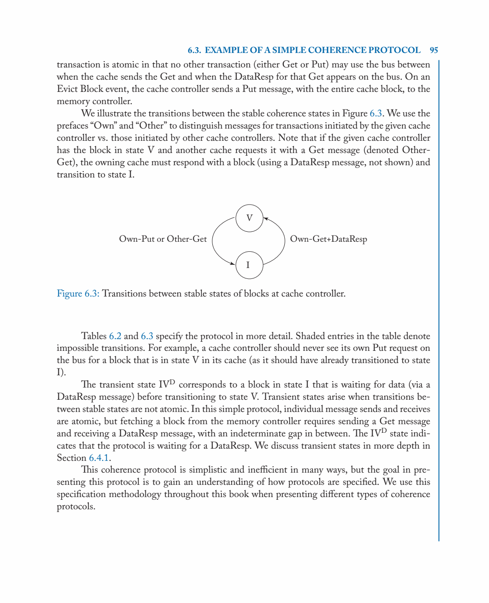
原书第 96 页PDF 118
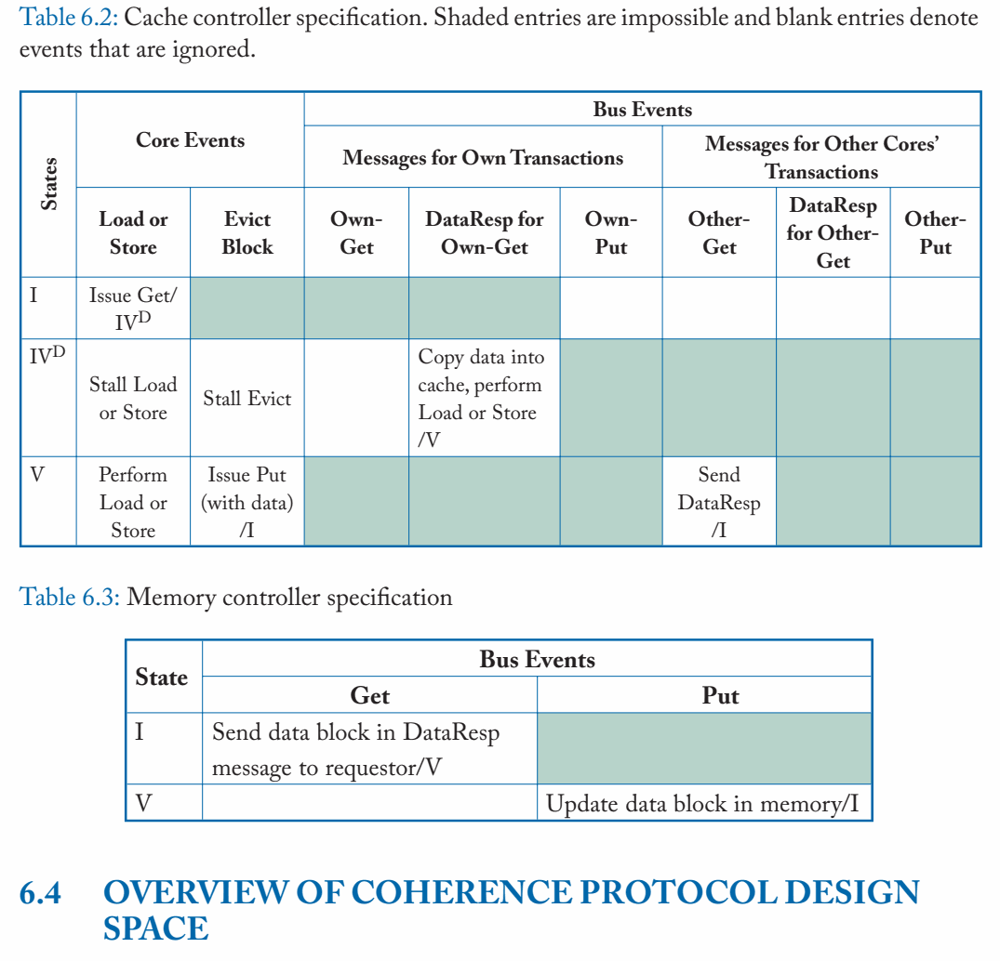
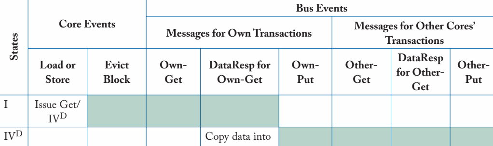
展开可搜索的英文文字
setatS Bus Events Core Events Messages for Other Cores’ Messages for Own Transactions Transactions DataResp Load or Evict Own- DataResp for Own- Other- Otherfor Other- Store Block Get Own-Get Put Get Put Get I Issue Get/ IVD IVD Copy data into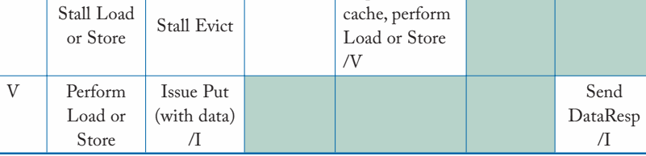
展开可搜索的英文文字
Stall Load cache, perform Stall Evict or Store Load or Store /V V Perform Issue Put Send Load or (with data) DataResp Store /I /I展开可搜索的英文文字
Bus Events State Get Put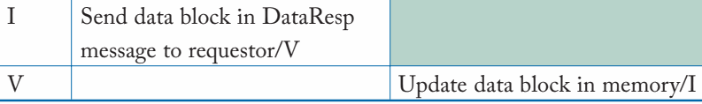
展开可搜索的英文文字
I Send data block in DataResp message to requestor/V V Update data block in memory/IENGLISH6.4 OVERVIEW OF COHERENCE PROTOCOL DESIGN SPACE
中文6.4 缓存一致性协议设计空间概览
ENGLISHAs mentioned in Section 6.1, a designer of a coherence protocol must choose the states, transactions, events, and transitions for each type of coherence controller in the system. The choice of stable states is largely independent of the rest of the coherence protocol. For example, there are two different classes of coherence protocols called snooping and directory, and an architect can design a snooping protocol or a directory protocol with the same set of stable states. We discuss stable states, independent of protocols, in Section 6.4.1. Similarly, the choice of transactions is also largely independent of the specific protocol, and we discuss transactions in Section 6.4.2. However, unlike the choices of stable states and transactions, the events, transitions and specific transient states are highly dependent on the coherence protocol and cannot be discussed
中文如 6.1 节所述，缓存一致性协议设计者必须为系统中的每类控制器选择状态、事务、事件和转移。稳定状态的选择在很大程度上独立于协议的其他部分。例如，缓存一致性协议可分为监听协议和目录协议两类，架构师可以使用同一组稳定状态设计这两类协议。6.4.1 节将独立于具体协议讨论稳定状态。同样，事务的选择也基本独立于具体协议，6.4.2 节将讨论事务。但与稳定状态和事务不同，事件、转移以及具体瞬态高度依赖缓存一致性协议，无法脱离协议
查看 原书第 96 页 的完整原版面（PDF 118）
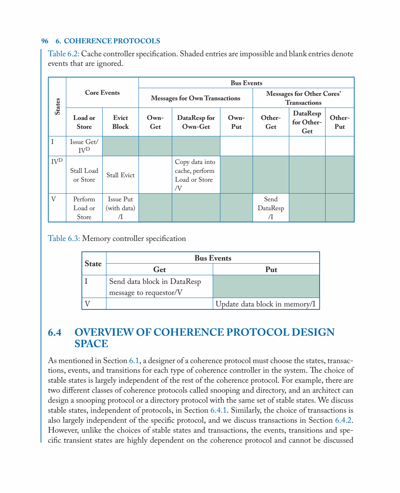
原书第 97 页PDF 119
ENGLISHin isolation. Thus, in Section 6.4.3, we discuss a few of the major design decisions in coherence protocols.
中文单独讨论。因此，6.4.3 节将介绍缓存一致性协议中的几个主要设计决策。
ENGLISH6.4.1 STATES In a system with only one actor (e.g., a single core processor without coherent DMA), the state of a cache block is either valid or invalid. There might be two possible valid states for a cache block if there is a need to distinguish blocks that are dirty. A dirty block has a value that has been written more recently than other copies of this block. For example, in a two-level cache hierarchy with a write-back L1 cache, the block in the L1 may be dirty with respect to the stale copy in the L2 cache.
中文6.4.1 状态
在仅有一个参与者的系统中，例如没有一致性 DMA 的单核处理器，缓存块的状态为有效或无效。如果需要区分脏块，有效状态还可以细分为两种。脏块的值比该块其他副本的值更新。例如，在 L1 采用写回策略的两级缓存层次中，相对于 L2 中的陈旧副本，L1 中的块可能是脏的。
在仅有一个参与者的系统中，例如没有一致性 DMA 的单核处理器，缓存块的状态为有效或无效。如果需要区分脏块，有效状态还可以细分为两种。脏块的值比该块其他副本的值更新。例如，在 L1 采用写回策略的两级缓存层次中，相对于 L2 中的陈旧副本，L1 中的块可能是脏的。
ENGLISHA system with multiple actors can also use just these two or three states, as in Section 6.3, but we often want to distinguish between different kinds of valid states. There are four characteristics of a cache block that we wish to encode in its state: validity, dirtiness, exclusivity, and ownership [10]. The latter two characteristics are unique to systems with multiple actors.
中文多参与者系统也可以仅使用这两种或三种状态，如 6.3 节所示，但通常希望区分不同类型的有效状态。我们希望用状态编码缓存块的四个属性：有效性、脏性、独占性和所有权 [10]。后两者是多参与者系统特有的属性。
ENGLISH• Validity: A valid block has the most up-to-date value for this block. The block may be read, but it may only be written if it is also exclusive.
中文• 有效性：有效块包含该块的最新值。该块可以读取，但只有具备独占性时才可以写入。
ENGLISH• Dirtiness: As in a single core processor, a cache block is dirty if its value is the most up-todate value, this value differs from the value in the LLC/memory, and the cache controller is responsible for eventually updating the LLC/memory with this new value. The term clean is often used as the opposite of dirty.
中文• 脏性：与单核处理器一样，若缓存块包含最新值，该值与 LLC/内存中的值不同，并且缓存控制器负责最终用新值更新 LLC/内存，则该块为脏块。通常使用“干净”表示与“脏”相反的属性。
ENGLISH• Exclusivity: A cache block is exclusive1 if it is the only privately cached copy of that block in the system (i.e., the block is not cached anywhere else except perhaps in the shared LLC).
中文• 独占性：若某缓存块是系统中该块唯一的私有缓存副本，则该块具有独占性¹，即除共享 LLC 之外，其他地方均未缓存该块。
ENGLISH• Ownership: A cache controller (or memory controller) is the owner of a block if it is responsible for responding to coherence requests for that block. In most protocols, there is exactly one owner of a given block at all times. A block that is owned may not be evicted from a cache to make room for another block—due to a capacity or conflict miss—without giving the ownership of the block to another coherence controller. Non-owned blocks may be evicted silently (i.e., without sending any messages) in some protocols.
中文• 所有权：若缓存控制器或内存控制器负责响应某块的缓存一致性请求，则它是该块的所有者。在多数协议中，任一时刻给定块恰好有一个所有者。具有所有权的块如果要因容量未命中或冲突未命中而被驱逐以腾出空间，就必须先将所有权交给另一个缓存一致性控制器。某些协议允许静默驱逐不具有所有权的块，即无须发送任何消息。
ENGLISHIn this section, we first discuss some commonly used stable states—states of blocks that are not currently in the midst of a coherence transaction—and then discuss the use of transient states for describing blocks that are currently in the midst of transactions.
中文本节首先介绍一些常用稳定状态，即当前不处于缓存一致性事务过程中的块状态；然后讨论如何用瞬态描述当前正在参与事务的块。
ENGLISH1The terminology here can be confusing, because there is a cache coherence state that is called “Exclusive,” but there are other cache coherence states that are exclusive in the sense defined here.
中文¹ 这里的术语可能引起混淆，因为有一种缓存一致性状态称为“Exclusive（独占态）”，但其他一些状态也具有这里定义的独占性。
查看 原书第 97 页 的完整原版面（PDF 119）
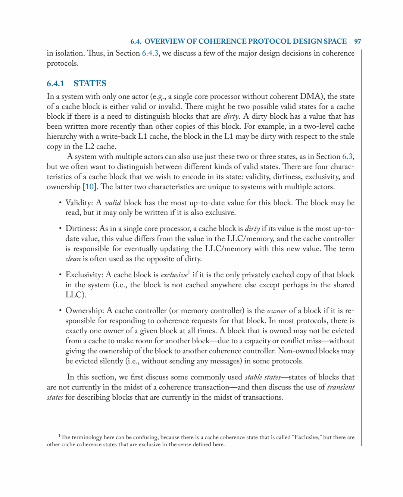
原书第 98 页PDF 120
ENGLISHStable States Many coherence protocols use a subset of the classic five state MOESI model first introduced by Sweazey and Smith [10]. These MOESI (often pronounced either “MO-sey” or “mo-EE-see”) states refer to the states of blocks in a cache, and the most fundamental three states are MSI; the O and E states may be used, but they are not as basic. Each of these states has a different combination of the characteristics described previously.
中文稳定状态
许多缓存一致性协议采用 Sweazey 和 Smith 首先提出的经典五状态 MOESI 模型的一个子集 [10]。MOESI（通常读作“MO-sey”或“mo-EE-see”）表示缓存中块的状态，其中最基本的三种状态是 MSI；O 和 E 可按需使用，但不像前三者那样基础。每种状态对应上述属性的一种不同组合。
许多缓存一致性协议采用 Sweazey 和 Smith 首先提出的经典五状态 MOESI 模型的一个子集 [10]。MOESI（通常读作“MO-sey”或“mo-EE-see”）表示缓存中块的状态，其中最基本的三种状态是 MSI；O 和 E 可按需使用，但不像前三者那样基础。每种状态对应上述属性的一种不同组合。
ENGLISH• M(odified): The block is valid, exclusive, owned, and potentially dirty. The block may be read or written. The cache has the only valid copy of the block, the cache must respond to requests for the block, and the copy of the block at the LLC/memory is potentially stale.
中文• M（Modified，已修改态）：块有效、独占、具有所有权，并且可能为脏。该块可读可写。缓存持有该块唯一的有效副本，必须响应对该块的请求，而 LLC/内存中的副本可能已经陈旧。
ENGLISH• S(hared): The block is valid but not exclusive, not dirty, and not owned. The cache has a read-only copy of the block. Other caches may have valid, read-only copies of the block.
中文• S（Shared，共享态）：块有效，但不独占、不为脏、也不具有所有权。缓存持有该块的只读副本。其他缓存也可能持有有效的只读副本。
ENGLISH• I(nvalid): The block is invalid. The cache either does not contain the block or it contains a potentially stale copy that it may not read or write. In this primer, we do not distinguish between these two situations, although sometimes the former situation may be denoted as the “Not Present” state.
中文• I（Invalid，无效态）：块无效。缓存中要么没有该块，要么保存着一个可能陈旧、既不可读也不可写的副本。本书不区分这两种情况，尽管前者有时会被记作“Not Present（不存在）”状态。
ENGLISHThe most basic protocols use only the MSI states, but there are reasons to add the O and E states to optimize certain situations. We will discuss these optimizations in later chapters when we discuss snooping and directory protocols with and without these states. For now, here is the complete list of MOESI states:
中文最基本的协议只使用 MSI 状态，但增加 O 和 E 状态可以优化某些情形。后续章节讨论包含或不包含这些状态的监听协议和目录协议时，将介绍这些优化。下面给出完整的 MOESI 状态列表：
ENGLISH• M(odified)
中文• M（Modified，已修改态）
ENGLISH• O(wned): The block is valid, owned, and potentially dirty, but not exclusive. The cache has a read-only copy of the block and must respond to requests for the block. Other caches may have a read-only copy of the block, but they are not owners. The copy of the block in the LLC/memory is potentially stale.
中文• O（Owned，拥有态）：块有效、具有所有权，并且可能为脏，但不独占。缓存持有该块的只读副本，并必须响应对该块的请求。其他缓存可以持有只读副本，但不具有所有权。LLC/内存中的副本可能已经陈旧。
ENGLISH• E(xclusive): The block is valid, exclusive, and clean. The cache has a read-only copy of the block. No other caches have a valid copy of the block, and the copy of the block in the LLC/memory is up-to-date. In this primer, we consider the block to be owned when it is in the Exclusive state, although there are protocols in which the Exclusive state is not treated as an ownership state. When we present MESI snooping and directory protocols in later chapters, we discuss the issues involved with making Exclusive blocks owners or not.
中文• E（Exclusive，独占态）：块有效、独占且干净。缓存持有该块的只读副本。其他缓存没有该块的有效副本，而 LLC/内存中的副本是最新的。本书将独占态视为具有所有权的状态，尽管有些协议不这样处理。在后续章节介绍 MESI 监听协议和目录协议时，将讨论是否让独占态块拥有所有权的相关问题。
ENGLISH• S(hared)
中文• S（Shared，共享态）
ENGLISH• I(nvalid)
中文• I（Invalid，无效态）
查看 原书第 98 页 的完整原版面（PDF 120）
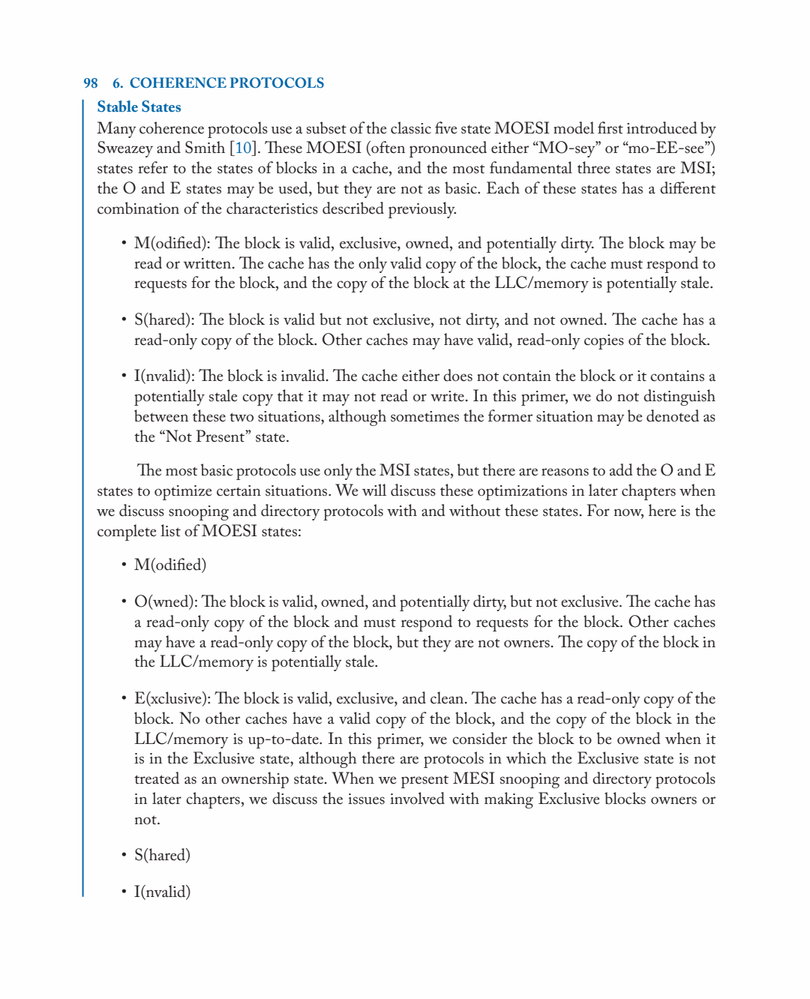
原书第 99 页PDF 121
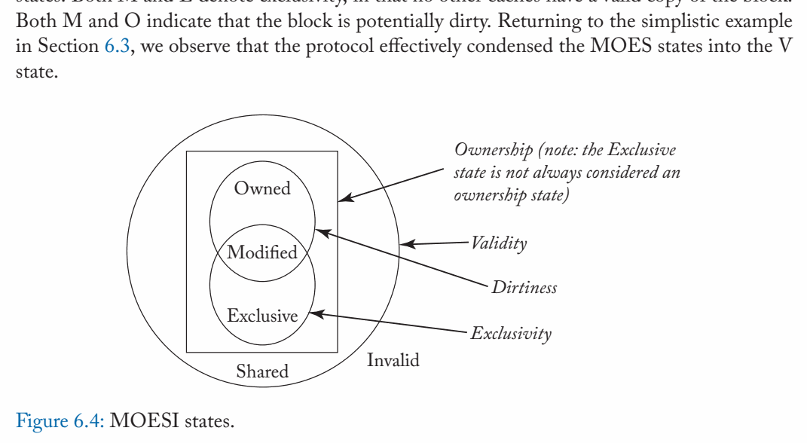
ENGLISHWe illustrate a Venn diagram of the MOESI states in Figure 6.4. The Venn diagram shows which states share which characteristics. All states besides I are valid. M, O, and E are ownership states. Both M and E denote exclusivity, in that no other caches have a valid copy of the block. Both M and O indicate that the block is potentially dirty. Returning to the simplistic example in Section 6.3, we observe that the protocol effectively condensed the MOES states into the V state.
中文图 6.4 用维恩图表示 MOESI 状态，展示各状态共享哪些属性。除 I 之外的所有状态都有效；M、O 和 E 具有所有权；M 和 E 都具有独占性，即其他缓存均没有该块的有效副本；M 和 O 都表示块可能为脏。回看 6.3 节的简化实例，可以发现该协议实际上将 MOES 四种状态合并成了 V 状态。
ENGLISHThe MOESI states, although quite common, are not an exhaustive set of stable states. For example, the F(orward) state is similar to the O state except that it is clean (i.e., the copy in the LLC/memory is up-to-date). There are many possible coherence states, but we focus our attention in this primer on the well-known MOESI states.
中文尽管 MOESI 状态十分常见，它并未穷尽所有稳定状态。例如，F（Forward，转发态）与 O 相似，但它是干净的，即 LLC/内存中的副本仍为最新。可能的缓存一致性状态还有很多，不过本书重点关注广为人知的 MOESI 状态。
ENGLISHTransient States Thus far, we have discussed only the stable states that occur when there is no current coherence activity for the block, and it is only these stable states that are used when referring to a protocol (e.g., “a system with a MESI protocol”). However, as we saw even in the example in Section 6.3, there may exist transient states that occur during the transition from one stable state to another stable state. In Section 6.3, we had the transient state IVD (in I, going to V, waiting for DataResp). In more sophisticated protocols, we are likely to encounter dozens of transient states. We encode these states using a notation XYZ, which denotes that the block is transitioning from stable state X to stable state Y, and the transition will not complete until an event of type Z occurs. For example, in a protocol in a later chapter, we use IMD to denote that a block was previously in I and will become M once a D(ata) message arrives for that block.
中文瞬态
到目前为止，我们只讨论了块当前没有缓存一致性活动时的稳定状态；在指称一种协议时，例如“采用 MESI 协议的系统”，也只使用这些稳定状态。然而，即使在 6.3 节的简单实例中，从一个稳定状态转到另一个稳定状态期间也会出现瞬态。该节中的瞬态 IVᴰ 表示处于 I、将转向 V、正在等待 DataResp。更复杂的协议可能具有数十种瞬态。我们用 XYZ 的形式编码这些状态，表示块正在从稳定状态 X 转向稳定状态 Y，并且只有发生 Z 类型事件，该转移才会完成。例如，在后续某章的协议中，IMᴰ 表示块此前为 I，将在对应的 D（Data，数据）消息到达后转为 M。
到目前为止，我们只讨论了块当前没有缓存一致性活动时的稳定状态；在指称一种协议时，例如“采用 MESI 协议的系统”，也只使用这些稳定状态。然而，即使在 6.3 节的简单实例中，从一个稳定状态转到另一个稳定状态期间也会出现瞬态。该节中的瞬态 IVᴰ 表示处于 I、将转向 V、正在等待 DataResp。更复杂的协议可能具有数十种瞬态。我们用 XYZ 的形式编码这些状态，表示块正在从稳定状态 X 转向稳定状态 Y，并且只有发生 Z 类型事件，该转移才会完成。例如，在后续某章的协议中，IMᴰ 表示块此前为 I，将在对应的 D（Data，数据）消息到达后转为 M。
查看 原书第 99 页 的完整原版面（PDF 121）
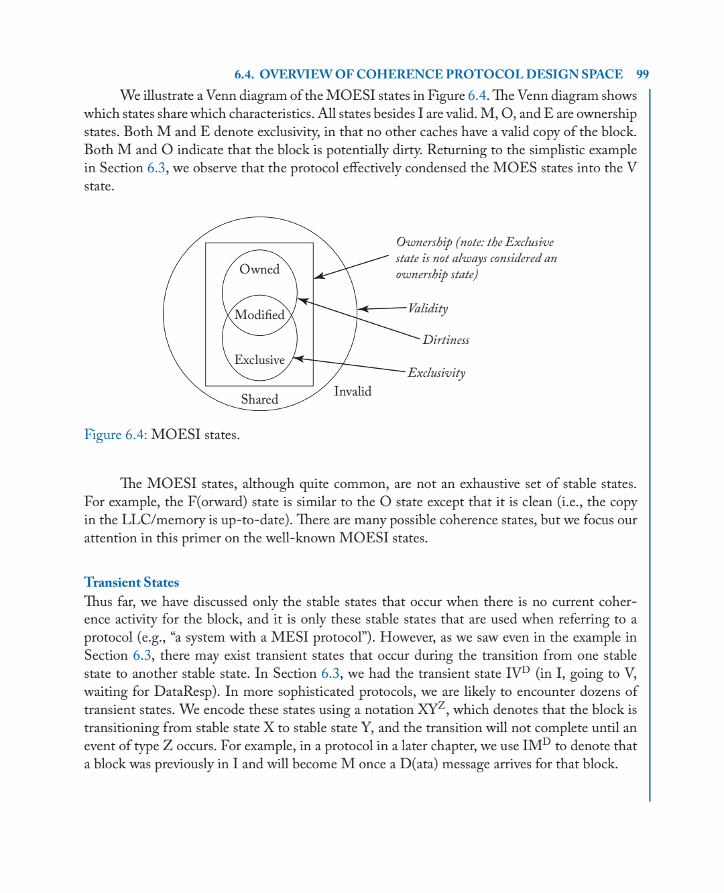
原书第 100 页PDF 122
ENGLISHStates of Blocks in the LLC/Memory The states that we have discussed thus far—both stable and transient—pertain to blocks residing in caches. Blocks in the LLC and memory also have states associated with them, and there are two general approaches to naming states of blocks in the LLC and memory. The choice of naming convention does not affect functionality or performance; it is simply a specification issue that can confuse an architect unfamiliar with the convention.
中文LLC/内存中块的状态
目前讨论的稳定状态和瞬态均针对缓存中的块。LLC 和内存中的块也关联有状态，其命名通常有两种方式。命名约定不会影响功能或性能，它只是规约层面的问题，但可能让不熟悉该约定的架构师困惑。
目前讨论的稳定状态和瞬态均针对缓存中的块。LLC 和内存中的块也关联有状态，其命名通常有两种方式。命名约定不会影响功能或性能，它只是规约层面的问题，但可能让不熟悉该约定的架构师困惑。
ENGLISH• Cache-centric: In this approach, which we believe to be the most common, the state of a block in the LLC and memory is an aggregation of the states of this block in the caches. For example, if a block is in all caches in I, then the LLC/memory state for this block is I. If a block is in one or more caches in S, then the LLC/memory state is S. If a block is in a single cache in M, then the LLC/memory state is M.
中文• 以缓存为中心：我们认为这是最常见的方式。LLC 和内存中某块的状态，是该块在各缓存中状态的汇总。例如，若该块在所有缓存中均为 I，则其 LLC/内存状态为 I；若它在一个或多个缓存中为 S，则 LLC/内存状态为 S；若它在一个缓存中为 M，则 LLC/内存状态为 M。
ENGLISH• Memory-centric: In this approach, the state of a block in the LLC/memory corresponds to the memory controller’s permissions to this block (rather than the permissions of the caches). For example, if a block is in all caches in I, then the LLC/memory state for this block is O (not I, as in the cache-centric approach), because the LLC/memory behaves like an owner of the block. If a block is in one or more caches in S, then the LLC/memory state is also O, for the same reason. However, if the block is in a single cache in M or O, then the LLC/ memory state is I, because the LLC/memory has an invalid copy of the block.
中文• 以内存为中心：这种方式下，LLC/内存中块的状态表示内存控制器对该块拥有的权限，而非缓存的权限。例如，若该块在所有缓存中均为 I，则其 LLC/内存状态为 O，而不是以缓存为中心方式下的 I，因为 LLC/内存此时充当块的所有者。若该块在一个或多个缓存中为 S，同理，其 LLC/内存状态也为 O。但若它在一个缓存中为 M 或 O，则 LLC/内存状态为 I，因为 LLC/内存中的副本无效。
ENGLISHAll protocols in this primer use cache-centric names for the states of blocks in the LLC and memory.
中文本书所有协议都采用以缓存为中心的方式命名 LLC 和内存中的块状态。
ENGLISHMaintaining Block State The system implementation must maintain the states associated with blocks in caches, the LLC, and memory. For caches and the LLC, this generally requires extending the per-block cache state by at most a few bits, since the number of stable states is generally small (e.g., 5 states for a MOESI protocol requires 3 bits per block). Coherence protocols may have many more transient states, but need maintain these states only for those blocks that have pending coherence transactions. Implementations typically maintain these transient states by adding additional bits to the miss status handling registers (MSHRs) or similar structures that are used to track these pending transactions [4].
中文维护块状态
系统实现必须维护缓存、LLC 和内存中各块的状态。对于缓存和 LLC，通常只需为每个块的状态增加少量比特，因为稳定状态的数量一般很少，例如 MOESI 协议的 5 个状态只需每块 3 比特。缓存一致性协议可能有更多瞬态，但只需为存在未完成缓存一致性事务的块维护这些状态。实现时通常在跟踪待完成事务的未命中状态处理寄存器（MSHR）或类似结构中增加比特，以保存瞬态 [4]。
系统实现必须维护缓存、LLC 和内存中各块的状态。对于缓存和 LLC，通常只需为每个块的状态增加少量比特，因为稳定状态的数量一般很少，例如 MOESI 协议的 5 个状态只需每块 3 比特。缓存一致性协议可能有更多瞬态，但只需为存在未完成缓存一致性事务的块维护这些状态。实现时通常在跟踪待完成事务的未命中状态处理寄存器（MSHR）或类似结构中增加比特，以保存瞬态 [4]。
ENGLISHFor memory, it might appear that the much greater aggregate capacity would pose a significant challenge. However, many current multicore systems maintain an inclusive LLC, which means that the LLC maintains a copy of every block that is cached anywhere in the system (even “exclusive” blocks). With an inclusive LLC, memory does not need to explicitly represent the coherence state. If a block resides in the LLC, its state in memory is the same as its state in the LLC. If the block is not in the LLC, its state in memory is implicitly Invalid, because absence from an inclusive LLC implies that the block is not in any cache. The sidebar
中文内存的总容量大得多，维护状态似乎会带来巨大挑战。不过，目前许多多核系统使用包含式 LLC，即 LLC 保留系统任意位置所缓存的每个块的副本，甚至包括“独占”块。有了包含式 LLC，内存便无须显式表示缓存一致性状态。如果块在 LLC 中，其内存状态与 LLC 状态相同；如果块不在 LLC 中，其内存状态就隐含为 Invalid，因为一个块不在包含式 LLC 中意味着它也不在任何缓存中。旁栏
查看 原书第 100 页 的完整原版面（PDF 122）
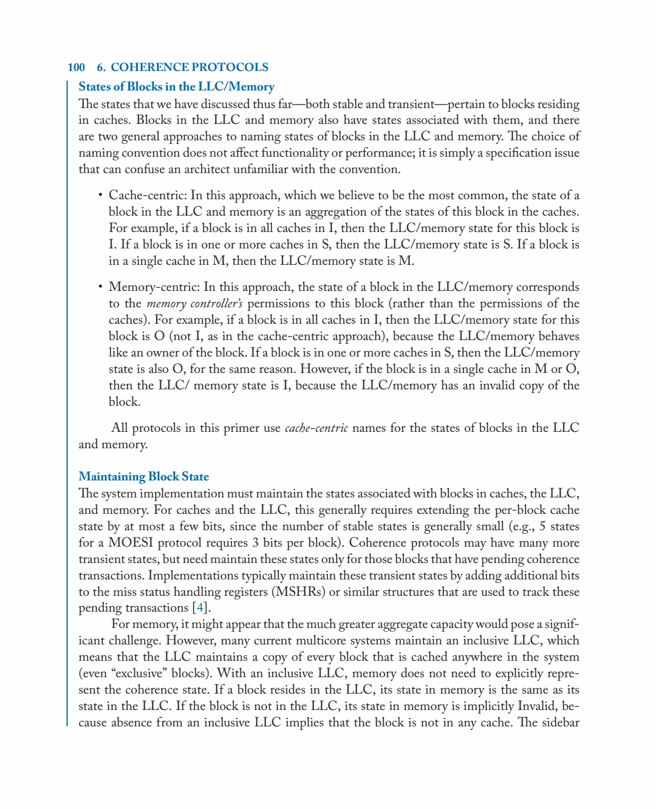
原书第 101 页PDF 123
ENGLISHdiscusses how memory state was maintained in the days before multicores with inclusive LLCs. The above discussion of memory assumes a system with a single multicore chip, as does most of this primer. Systems with multiple multicore chips may benefit from explicit coherence state logically at memory.
中文讨论了采用包含式 LLC 的多核系统出现之前如何维护内存状态。上述讨论与本书大部分内容一样，假设系统只有一颗多核芯片。包含多颗多核芯片的系统，可能受益于在逻辑上的内存位置显式维护缓存一致性状态。
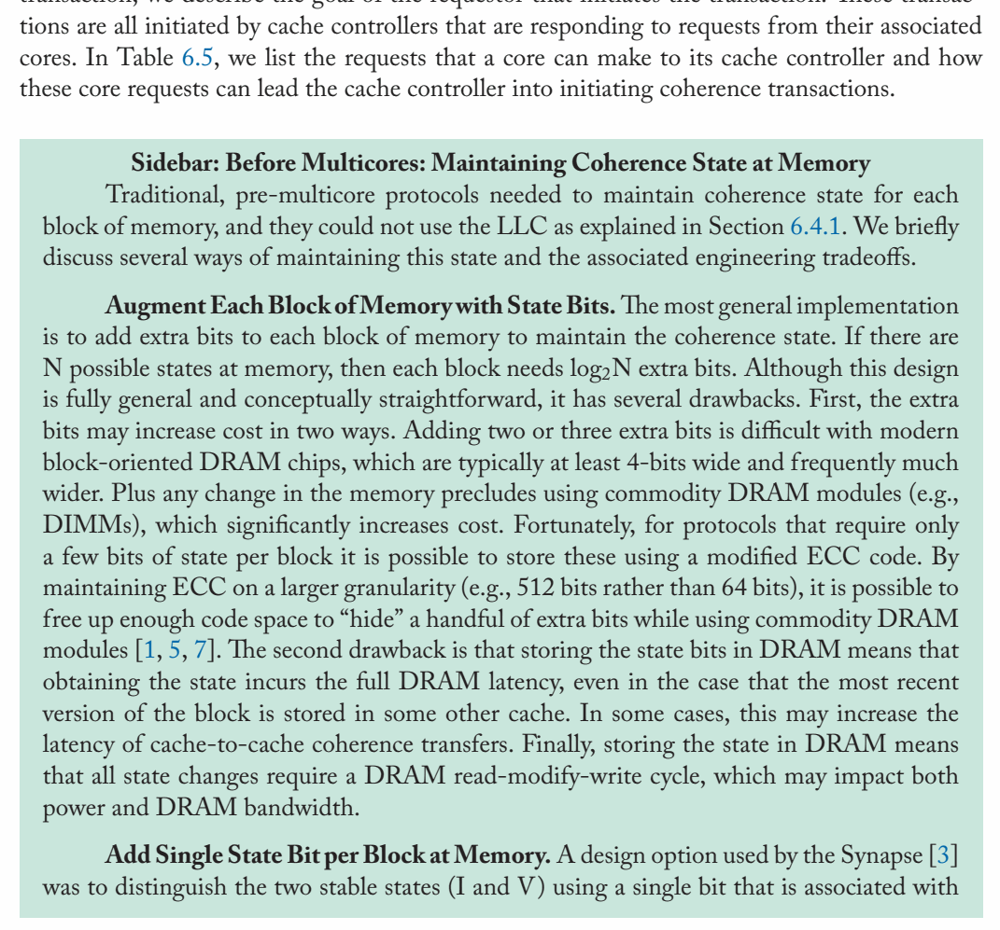
ENGLISH6.4.2 TRANSACTIONS Most protocols have a similar set of transactions, because the basic goals of the coherence controllers are similar. For example, virtually all protocols have a transaction for obtaining Shared (read-only) access to a block. In Table 6.4 we list a set of common transactions and, for each transaction, we describe the goal of the requestor that initiates the transaction. These transactions are all initiated by cache controllers that are responding to requests from their associated cores. In Table 6.5, we list the requests that a core can make to its cache controller and how these core requests can lead the cache controller into initiating coherence transactions.
中文6.4.2 事务
多数协议具有相似的事务集合，因为缓存一致性控制器的基本目标相似。例如，几乎所有协议都包含获取某块 Shared（只读）访问权限的事务。表 6.4 列出了常见事务，并说明发起各事务的请求方目标。这些事务均由缓存控制器响应其处理器核的请求而发起。表 6.5 列出了处理器核可向缓存控制器提出的请求，以及这些请求如何使缓存控制器发起缓存一致性事务。
多数协议具有相似的事务集合，因为缓存一致性控制器的基本目标相似。例如，几乎所有协议都包含获取某块 Shared（只读）访问权限的事务。表 6.4 列出了常见事务，并说明发起各事务的请求方目标。这些事务均由缓存控制器响应其处理器核的请求而发起。表 6.5 列出了处理器核可向缓存控制器提出的请求，以及这些请求如何使缓存控制器发起缓存一致性事务。
ENGLISHSidebar: Before Multicores: Maintaining Coherence State at Memory Traditional, pre-multicore protocols needed to maintain coherence state for each block of memory, and they could not use the LLC as explained in Section 6.4.1. We briefly discuss several ways of maintaining this state and the associated engineering tradeoffs.
中文旁栏：多核时代之前——在内存处维护缓存一致性状态
多核时代之前的传统协议需要为每个内存块维护缓存一致性状态，无法采用 6.4.1 节所述的 LLC 方式。这里简要讨论几种维护方式及其工程权衡。
多核时代之前的传统协议需要为每个内存块维护缓存一致性状态，无法采用 6.4.1 节所述的 LLC 方式。这里简要讨论几种维护方式及其工程权衡。
ENGLISHAugment Each Block of Memory with State Bits. The most general implementation is to add extra bits to each block of memory to maintain the coherence state. If there are N possible states at memory, then each block needs log N extra bits. Although this design 2 is fully general and conceptually straightforward, it has several drawbacks. First, the extra bits may increase cost in two ways. Adding two or three extra bits is difficult with modern block-oriented DRAM chips, which are typically at least 4-bits wide and frequently much wider. Plus any change in the memory precludes using commodity DRAM modules (e.g., DIMMs), which significantly increases cost. Fortunately, for protocols that require only a few bits of state per block it is possible to store these using a modified ECC code. By maintaining ECC on a larger granularity (e.g., 512 bits rather than 64 bits), it is possible to free up enough code space to “hide” a handful of extra bits while using commodity DRAM modules [1, 5, 7]. The second drawback is that storing the state bits in DRAM means that obtaining the state incurs the full DRAM latency, even in the case that the most recent version of the block is stored in some other cache. In some cases, this may increase the latency of cache-to-cache coherence transfers. Finally, storing the state in DRAM means that all state changes require a DRAM read-modify-write cycle, which may impact both power and DRAM bandwidth.
中文为每个内存块增设状态位。最通用的实现是在每个内存块中增加比特以维护缓存一致性状态。如果内存处可能有 N 个状态，每个块就需要额外的 log₂N 比特。这种设计通用而且概念清晰，但存在若干缺点。第一，额外比特可能从两个方面增加成本。现代 DRAM 芯片以块为单位组织，位宽通常至少为 4 比特，而且往往更宽，因此仅增加 2 或 3 比特并不容易。此外，修改内存组织会使系统无法使用商用 DRAM 模块（例如 DIMM），从而显著增加成本。好在对于每块只需少量状态位的协议，可以通过修改 ECC 编码来 store 这些位。以更大粒度维护 ECC，例如从 64 比特改为 512 比特，便能释放足够的编码空间，在使用商用 DRAM 模块的同时“隐藏”少量额外比特 [1, 5, 7]。第二，将状态位存于 DRAM，意味着读取状态需要承受完整的 DRAM 延迟，即使块的最新版本保存在其他缓存中也是如此。这有时会增加缓存到缓存的一致性传输延迟。最后，把状态放在 DRAM 中意味着每次状态变化都需要一次 DRAM 读—改—写周期，可能同时影响功耗与 DRAM 带宽。
ENGLISHAdd Single State Bit per Block at Memory. A design option used by the Synapse [3] was to distinguish the two stable states (I and V ) using a single bit that is associated with
中文在内存处为每块增加一个状态位。Synapse [3] 采用的方案，是为每个内存块关联一个比特，用它区分 I 和 V 两个稳定状态。
查看 原书第 101 页 的完整原版面（PDF 123）
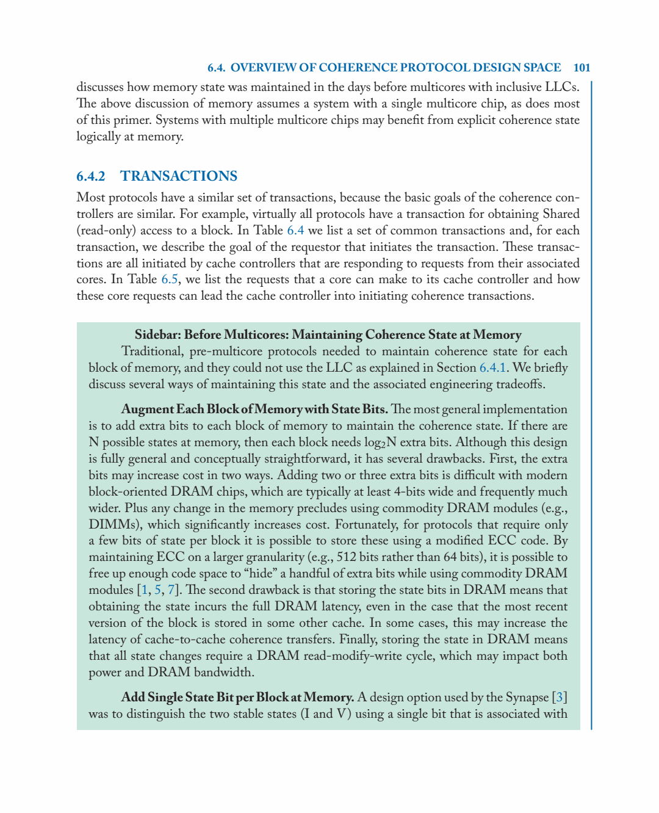
原书第 102 页PDF 124
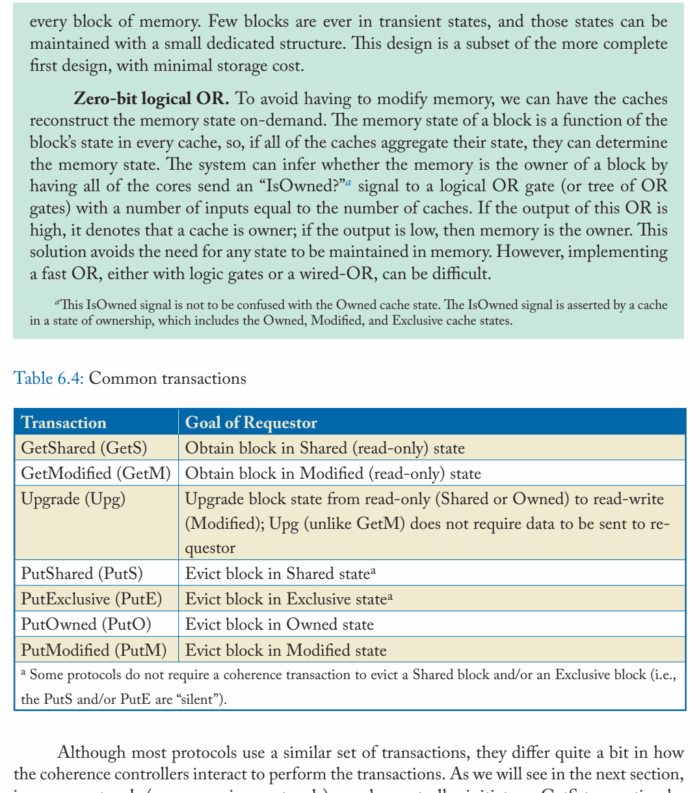
ENGLISHevery block of memory. Few blocks are ever in transient states, and those states can be maintained with a small dedicated structure. This design is a subset of the more complete first design, with minimal storage cost.
中文处于瞬态的块始终很少，因此这些状态可以由一个小型专用结构维护。该方案是前述通用方案的一个子集，存储成本最低。
ENGLISHZero-bit logical OR. To avoid having to modify memory, we can have the caches reconstruct the memory state on-demand. The memory state of a block is a function of the block’s state in every cache, so, if all of the caches aggregate their state, they can determine the memory state. The system can infer whether the memory is the owner of a block by having all of the cores send an “IsOwned?”a signal to a logical OR gate (or tree of OR gates) with a number of inputs equal to the number of caches. If the output of this OR is high, it denotes that a cache is owner; if the output is low, then memory is the owner. This solution avoids the need for any state to be maintained in memory. However, implementing a fast OR, either with logic gates or a wired-OR, can be difficult.
中文零比特逻辑或。为避免修改内存，可以让缓存按需重建内存状态。一个块的内存状态是其在所有缓存中状态的函数，因此只要汇总所有缓存的状态，就能确定内存状态。系统可让所有核向一个逻辑或门（或或门树）发送“IsOwned?”ᵃ 信号，其输入数等于缓存数，从而推断内存是否为块的所有者。若或运算输出为高电平，表示某个缓存是所有者；若为低电平，表示内存是所有者。这样就无须在内存中维护任何状态。不过，无论采用逻辑门还是线或，实现快速的或运算都可能较难。
ENGLISHaThis IsOwned signal is not to be confused with the Owned cache state. The IsOwned signal is asserted by a cache in a state of ownership, which includes the Owned, Modified, and Exclusive cache states.
中文ᵃ 不要将 IsOwned 信号与缓存的 Owned 状态混淆。缓存只要处于具有所有权的状态，就会置位 IsOwned；这些状态包括 Owned、Modified 和 Exclusive。
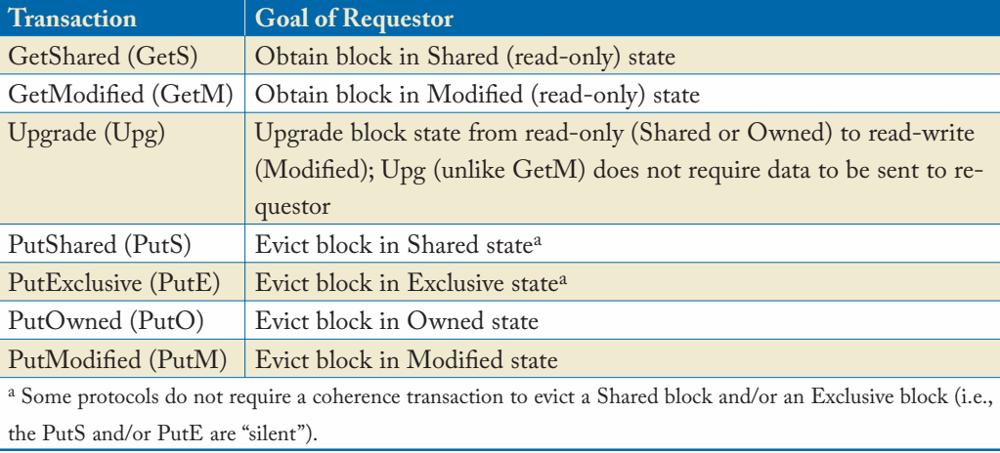
展开可搜索的英文文字
Transaction Goal of Requestor GetShared (GetS) Obtain block in Shared (read-only) state GetModifi ed (GetM) Obtain block in Modifi ed (read-only) state Upgrade (Upg) Upgrade block state from read-only (Shared or Owned) to read-write (Modifi ed); Upg (unlike GetM) does not require data to be sent to requestor PutShared (PutS) Evict block in Shared statea PutExclusive (PutE) Evict block in Exclusive statea PutOwned (PutO) Evict block in Owned state PutModifi ed (PutM) Evict block in Modifi ed state a Some protocols do not require a coherence transaction to evict a Shared block and/or an Exclusive block (i.e., the PutS and/or PutE are “silent”).ENGLISHAlthough most protocols use a similar set of transactions, they differ quite a bit in how the coherence controllers interact to perform the transactions. As we will see in the next section, in some protocols (e.g., snooping protocols) a cache controller initiates a GetS transaction by broadcasting a GetS request to all coherence controllers in the system, and whichever controller is currently the owner of the block responds to the requestor with a message that contains the desired data. Conversely, in other protocols (e.g., directory protocols) a cache controller initi-
中文虽然多数协议采用相似的事务集合，控制器之间为执行事务而进行的交互方式却有很大差异。下一节将看到，在某些协议中，例如监听协议，缓存控制器向系统所有缓存一致性控制器广播 GetS 请求以发起 GetS 事务，当前拥有该块的控制器发送包含所需数据的消息给请求方。而在另一些协议中，例如目录协议，缓存控制器
查看 原书第 102 页 的完整原版面（PDF 124）
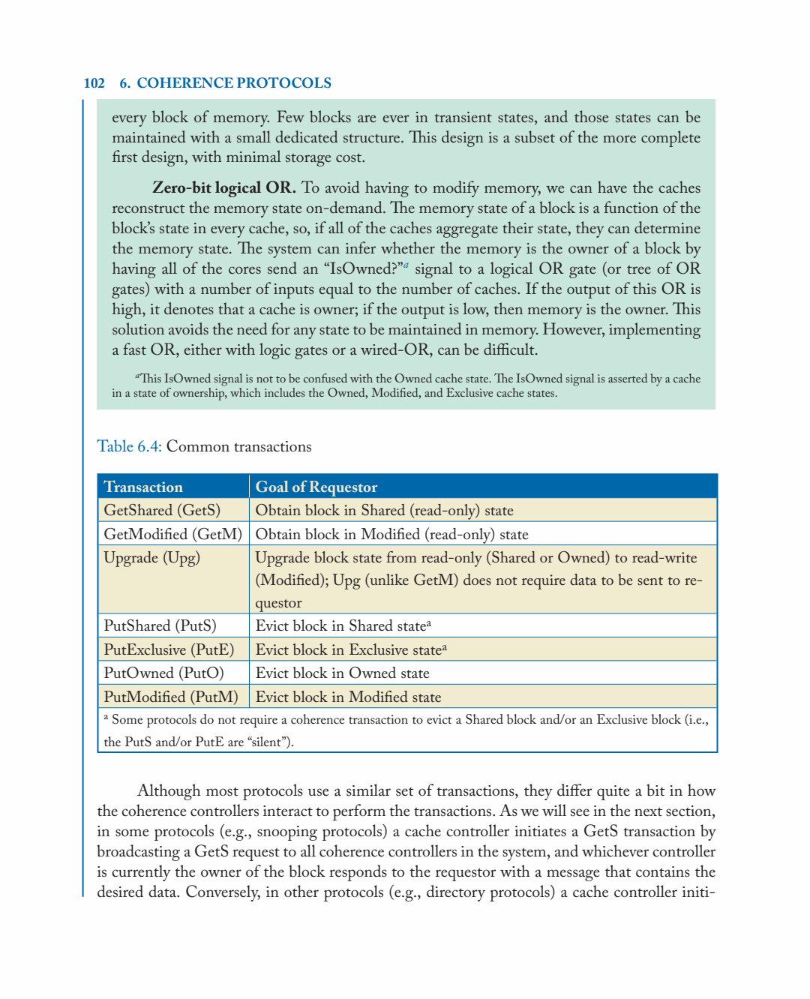
原书第 103 页PDF 125
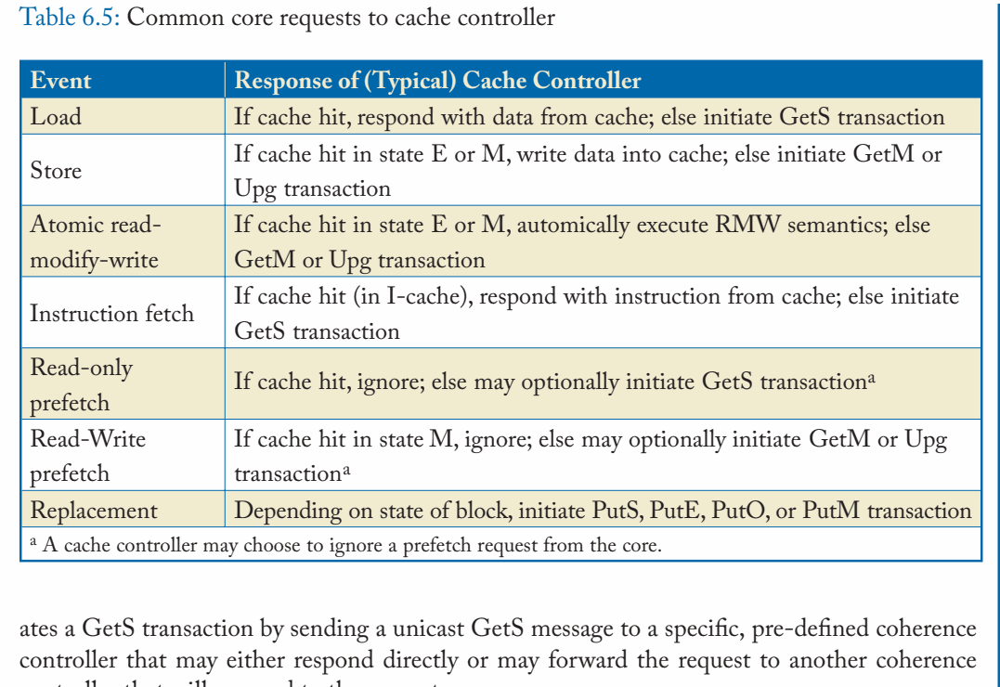
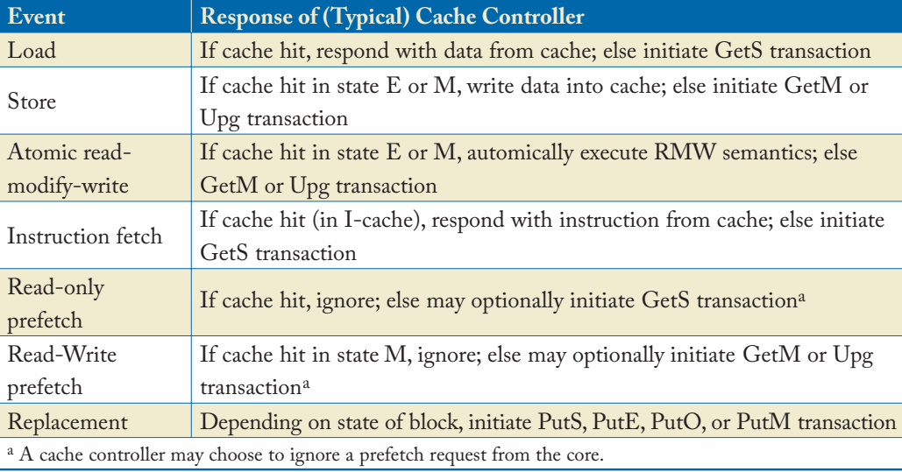
展开可搜索的英文文字
Event Response of (Typical) Cache Controller Load If cache hit, respond with data from cache; else initiate GetS transaction If cache hit in state E or M, write data into cache; else initiate GetM or Store Upg transaction Atomic read- If cache hit in state E or M, automically execute RMW semantics; else modify-write GetM or Upg transaction If cache hit (in I-cache), respond with instruction from cache; else initiate Instruction fetch GetS transaction Read-only If cache hit, ignore; else may optionally initiate GetS transactiona prefetch Read-Write If cache hit in state M , ignore ; else may optional ly initiate GetM or Upg prefetch transactiona Replacement Depending on state of block, initiate PutS, PutE, PutO, or PutM transaction a A cache controller may choose to ignore a prefetch request from the core.ENGLISHates a GetS transaction by sending a unicast GetS message to a specific, pre-defined coherence controller that may either respond directly or may forward the request to another coherence controller that will respond to the requestor.
中文向预先指定的某个缓存一致性控制器单播 GetS 消息，以发起 GetS 事务。该控制器可以直接响应，也可以把请求转发给另一个控制器，由后者响应请求方。
ENGLISH6.4.3 MAJOR PROTOCOL DESIGN OPTIONS There are many different ways to design a coherence protocol. Even for the same set of states and transactions, there are many different possible protocols. The design of the protocol determines what events and transitions are possible at each coherence controller; unlike with states and transactions, there is no way to present a list of possible events or transitions that is independent from the protocol.
中文6.4.3 主要协议设计选项
缓存一致性协议有多种设计方式。即便状态集合和事务集合相同，也能构造许多不同协议。协议设计决定每个控制器处可能出现的事件和转移；与状态和事务不同，事件或转移不存在一份独立于具体协议的通用清单。
缓存一致性协议有多种设计方式。即便状态集合和事务集合相同，也能构造许多不同协议。协议设计决定每个控制器处可能出现的事件和转移；与状态和事务不同，事件或转移不存在一份独立于具体协议的通用清单。
ENGLISHDespite the enormous design space for coherence protocols, there are two primary design decisions that have a major impact on the rest of the protocol, and we discuss them next.
中文尽管缓存一致性协议的设计空间极大，有两个主要设计决策会显著影响协议的其余部分，下面分别讨论。
ENGLISHSnooping vs. Directory There are two main classes of coherence protocols: snooping and directory. We present a brief overview of these protocols now and defer in-depth coverage of them until Chapters 7 and 8, respectively.
中文监听协议与目录协议
缓存一致性协议主要分为监听和目录两类。这里先给出简要概览，第 7 章和第 8 章将分别深入介绍。
缓存一致性协议主要分为监听和目录两类。这里先给出简要概览，第 7 章和第 8 章将分别深入介绍。
ENGLISH• Snooping protocol: A cache controller initiates a request for a block by broadcasting a request message to all other coherence controllers. The coherence controllers collectively
中文• 监听协议：缓存控制器向其他所有缓存一致性控制器广播请求消息，以请求某个块。各控制器协同
查看 原书第 103 页 的完整原版面（PDF 125）
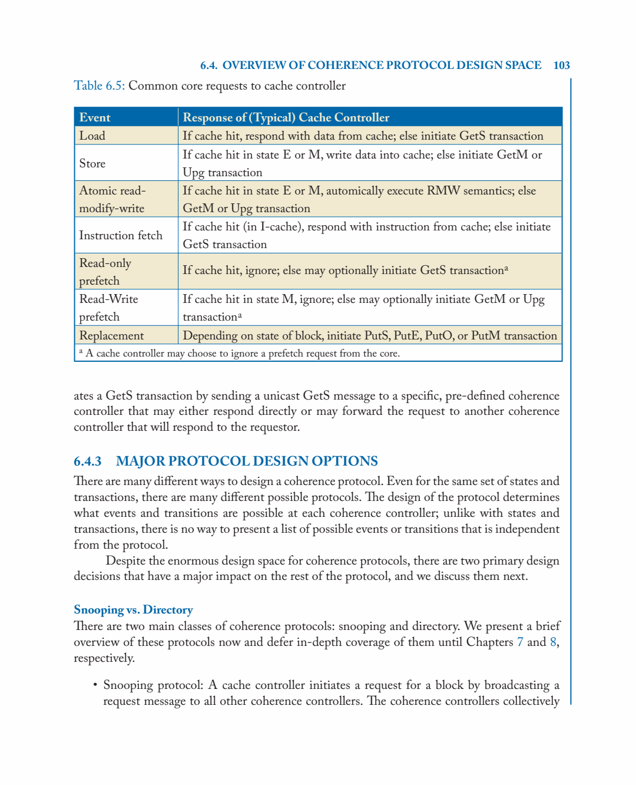
原书第 104 页PDF 126
ENGLISH“do the right thing,” e.g., sending data in response to another core’s request if they are the owner. Snooping protocols rely on the interconnection network to deliver the broadcast messages in a consistent order to all cores. Most snooping protocols assume that requests arrive in a total order, e.g., via a shared-wire bus, but more advanced interconnection networks and relaxed orders are possible.
中文“做正确的事”，例如作为所有者时发送数据，响应其他核的请求。监听协议依赖互连网络以一致的顺序向所有核交付广播消息。多数监听协议假定请求以全序到达，例如通过共享导线总线实现，但也可以使用更先进的互连网络和更宽松的顺序。
ENGLISH• Directory protocol: A cache controller initiates a request for a block by unicasting it to the memory controller that is the home for that block. The memory controller maintains a directory that holds state about each block in the LLC/memory, such as the identity of the current owner or the identities of current sharers. When a request for a block reaches the home, the memory controller looks up this block’s directory state. For example, if the request is a GetS, the memory controller looks up the directory state to determine the owner. If the LLC/memory is the owner, the memory controller completes the transaction by sending a data response to the requestor. If a cache controller is the owner, the memory controller forwards the request to the owner cache; when the owner cache receives the forwarded request, it completes the transaction by sending a data response to the requestor.
中文• 目录协议：缓存控制器把块请求单播给该块的归属内存控制器。内存控制器维护一个目录，记录 LLC/内存中每个块的状态信息，例如当前所有者或当前共享者的身份。块请求到达归属节点后，内存控制器查询其目录状态。例如，对于 GetS 请求，内存控制器通过目录确定所有者。若所有者是 LLC/内存，内存控制器向请求方发送数据响应，完成事务；若所有者是某个缓存控制器，内存控制器把请求转发给所有者缓存。所有者缓存收到转发请求后，向请求方发送数据响应，完成事务。
ENGLISHThe choice of snooping vs. directory involves making tradeoffs. Snooping protocols are logically simple, but they do not scale to large numbers of cores because broadcasting does not scale. Directory protocols are scalable because they unicast, but many transactions take more time because they require an extra message to be sent when the home is not the owner. In addition, the choice of protocol affects the interconnection network (e.g., classical snooping protocols require a total order for request messages).
中文监听协议与目录协议的选择涉及多方面权衡。监听协议逻辑简单，但由于广播难以扩展，它无法扩展到大量处理器核。目录协议采用单播，具有可扩展性；但当归属节点不是所有者时，必须多发送一条消息，因此许多事务耗时更长。此外，协议选择还会影响互连网络，例如经典监听协议要求请求消息具有全序。
ENGLISHInvalidate vs. Update The other major design decision in a coherence protocol is to decide what to do when a core writes to a block. This decision is independent of whether the protocol is snooping or directory. There are two options.
中文无效化与更新
缓存一致性协议的另一个主要决策，是当某个核写一个块时应该如何处理。该决策独立于监听或目录的选择，具体有以下两种方案。
缓存一致性协议的另一个主要决策，是当某个核写一个块时应该如何处理。该决策独立于监听或目录的选择，具体有以下两种方案。
ENGLISH• Invalidate protocol: When a core wishes to write to a block, it initiates a coherence transaction to invalidate the copies in all other caches. Once the copies are invalidated, the requestor can write to the block without the possibility of another core reading the block’s old value. If another core wishes to read the block after its copy has been invalidated, it has to initiate a new coherence transaction to obtain the block, and it will obtain a copy from the core that wrote it, thus preserving coherence.
中文• 无效化协议：当某个核希望写一个块时，先发起缓存一致性事务，使所有其他缓存中的副本无效。副本全部无效后，请求方即可写该块，而不会有其他核读到旧值。若另一个核随后希望读取已被无效化的块，就必须发起新的缓存一致性事务获取该块，并从执行写入的核获得副本，从而保持缓存一致性。
ENGLISH• Update protocol: When a core wishes to write a block, it initiates a coherence transaction to update the copies in all other caches to reflect the new value it wrote to the block.
中文• 更新协议：当某个核希望写一个块时，发起缓存一致性事务，将所有其他缓存中的副本更新为此次写入的新值。
ENGLISHOnce again, there are tradeoffs involved in making this decision. Update protocols reduce the latency for a core to read a newly written block because the core does not need to initiate and wait for a GetS transaction to complete. However, update protocols typically consume
中文这项选择同样存在权衡。更新协议降低了其他核读取新写入块的延迟，因为它们无须发起 GetS 事务并等待完成。然而，与无效化协议相比，更新协议通常消耗
查看 原书第 104 页 的完整原版面（PDF 126）
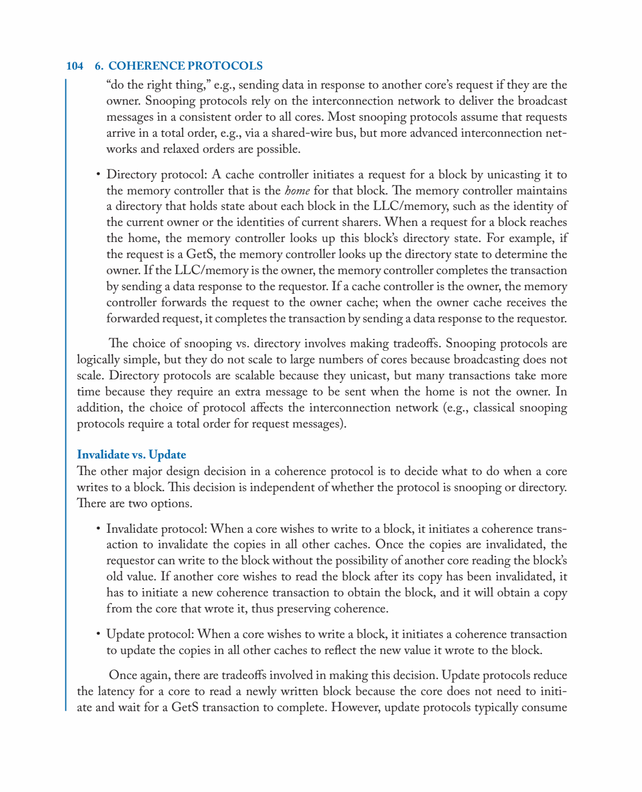
原书第 105 页PDF 127
ENGLISHsubstantially more bandwidth than invalidate protocols because update messages are larger than invalidate messages (an address and a new value, rather than just an address). Furthermore, update protocols greatly complicate the implementation of many memory consistency models. For example, preserving write atomicity (Section 5.5) becomes much more difficult when multiple caches must apply multiple updates to multiple copies of a block. Because of the complexity of update protocols, they are rarely implemented; in this primer, we focus on the far more common invalidate protocols.
中文多得多的带宽，因为更新消息比无效化消息更大：前者包含地址和新值，后者只有地址。此外，更新协议大幅增加了许多内存一致性模型的实现复杂度。例如，当多个缓存需要对一个块的多个副本应用多次更新时，保持写原子性（5.5 节）会变得困难得多。由于这种复杂性，更新协议很少用于实际实现；本书主要讨论更常见的无效化协议。
ENGLISHHybrid Designs For both major design decisions, one option is to develop a hybrid. There are protocols that combine aspects of snooping and directory protocols [2, 6], and there are protocols that combine aspects of invalidate and update protocols [8]. The design space is rich and architects are not constrained to following any particular style of design.
中文混合设计
上述两个主要设计决策都可以采用混合方案。有些协议结合监听协议和目录协议的特征 [2, 6]，也有些协议结合无效化协议和更新协议的特征 [8]。设计空间十分丰富，架构师不必拘泥于某一种设计风格。
上述两个主要设计决策都可以采用混合方案。有些协议结合监听协议和目录协议的特征 [2, 6]，也有些协议结合无效化协议和更新协议的特征 [8]。设计空间十分丰富，架构师不必拘泥于某一种设计风格。
ENGLISH6.5 REFERENCES
中文6.5 参考文献
ENGLISH[1] A. Charlesworth. The Sun Fireplane SMP interconnect in the Sun 6800. In Proc. of the 9th Hot Interconnects Symposium, August 2001. DOI: 10.1109/his.2001.946691. 101
中文[1] A. Charlesworth.《Sun 6800 中的 Sun Fireplane SMP 互连》. In Proc. of the 9th Hot Interconnects Symposium, 2001 年 8 月. DOI: 10.1109/his.2001.946691. 引用页：101。
ENGLISH[2] P. Conway and B. Hughes. The AMD Opteron northbridge architecture. IEEE Micro, 27(2):10–21, March/April 2007. DOI: 10.1109/mm.2007.43. 105
中文[2] P. Conway and B. Hughes.《AMD Opteron 北桥架构》. IEEE Micro, 27(2):10–21, 2007 年 3/4 月. DOI: 10.1109/mm.2007.43. 引用页：105。
ENGLISH[3] S. J. Frank. Tightly coupled multiprocessor system speeds memory-access times. Electronics, 57(1):164–169, January 1984. 101
中文[3] S. J. Frank.《紧耦合多处理器系统缩短内存访问时间》. Electronics, 57(1):164–169, 1984 年 1 月. 引用页：101。
ENGLISH[4] D. Kroft. Lockup-free instruction fetch/prefetch cache organization. In Proc. of the 8th Annual Symposium on Computer Architecture, May 1981. DOI: 10.1145/285930.285979. 100
中文[4] D. Kroft.《非阻塞取指/预取缓存组织》. In Proc. of the 8th Annual Symposium on Computer Architecture, 1981 年 5 月. DOI: 10.1145/285930.285979. 引用页：100。
ENGLISH[5] H. Q. Le et al. IBM POWER6 microarchitecture. IBM Journal of Research and Development, 51(6), 2007. DOI: 10.1147/rd.516.0639. 101
中文[5] H. Q. Le et al.《IBM POWER6 微架构》. IBM Journal of Research and Development, 51(6), 2007. DOI: 10.1147/rd.516.0639. 引用页：101。
ENGLISH[6] M. M. K. Martin, D. J. Sorin, M. D. Hill, and D. A. Wood. Bandwidth adaptive snooping. In Proc. of the 8th IEEE Symposium on High-Performance Computer Architecture, pp. 251– 262, January 2002. DOI: 10.1109/hpca.2002.995715. 105
中文[6] M. M. K. Martin, D. J. Sorin, M. D. Hill, and D. A. Wood.《带宽自适应监听》. In Proc. of the 8th IEEE Symposium on High-Performance Computer Architecture, pp. 251–262, 2002 年 1 月. DOI: 10.1109/hpca.2002.995715. 引用页：105。
ENGLISH[7] A. Nowatzyk, G. Aybay, M. Browne, E. Kelly, and M. Parkin. The S3.mp scalable shared memory multiprocessor. In Proc. of the International Conference on Parallel Processing, vol. I, pp. 1–10, August 1995. DOI: 10.1109/hicss.1994.323149. 101
中文[7] A. Nowatzyk, G. Aybay, M. Browne, E. Kelly, and M. Parkin.《S3.mp 可扩展共享内存多处理器》. In Proc. of the International Conference on Parallel Processing, vol. I, pp. 1–10, 1995 年 8 月. DOI: 10.1109/hicss.1994.323149. 引用页：101。
ENGLISH[8] A. Raynaud, Z. Zhang, and J. Torrellas. Distance-adaptive update protocols for scalable shared-memory multiprocessors. In Proc. of the 2nd IEEE Symposium on High-Performance Computer Architecture, February 1996. DOI: 10.1109/hpca.1996.501197. 105
中文[8] A. Raynaud, Z. Zhang, and J. Torrellas.《面向可扩展共享内存多处理器的距离自适应更新协议》. In Proc. of the 2nd IEEE Symposium on High-Performance Computer Architecture, 1996 年 2 月. DOI: 10.1109/hpca.1996.501197. 引用页：105。
查看 原书第 105 页 的完整原版面（PDF 127）
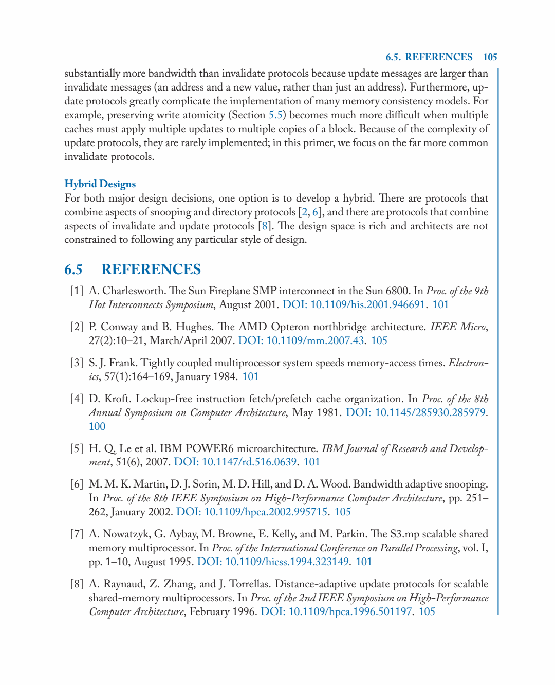
原书第 106 页PDF 128
ENGLISH[9] D. J. Sorin, M. Plakal, M. D. Hill, A. E. Condon, M. M. Martin, and D. A. Wood. Specifying and verifying a broadcast and a multicast snooping cache coherence protocol. IEEE Transactions on Parallel and Distributed Systems, 13(6):556–578, June 2002. DOI: 10.1109/tpds.2002.1011412. 93
中文[9] D. J. Sorin, M. Plakal, M. D. Hill, A. E. Condon, M. M. Martin, and D. A. Wood.《广播与多播监听式缓存一致性协议的规约与验证》. IEEE Transactions on Parallel and Distributed Systems, 13(6):556–578, 2002 年 6 月. DOI: 10.1109/tpds.2002.1011412. 引用页：93。
ENGLISH[10] P. Sweazey and A. J. Smith. A class of compatible cache consistency protocols and their support by the IEEE Futurebus. In Proc. of the 13th Annual International Symposium on Computer Architecture, pp. 414–423, June 1986. DOI: 10.1145/17356.17404. 97, 98
中文[10] P. Sweazey and A. J. Smith.《一类兼容的缓存一致性协议及 IEEE Futurebus 对它们的支持》. In Proc. of the 13th Annual International Symposium on Computer Architecture, pp. 414–423, 1986 年 6 月. DOI: 10.1145/17356.17404. 引用页：97、98。
查看 原书第 106 页 的完整原版面（PDF 128）
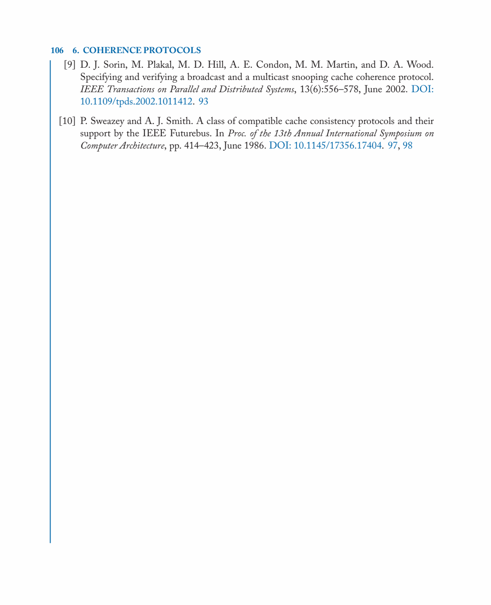